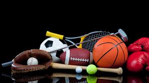

At a young age I would always play sports and my dad was the coach throughout all my years playing sports which I started when I was 5. I played football, basketball, and baseball, I like each sport but my favoritee was football for sure. Being on a sport team helped me make alot of new friends and that was always an advantage for me at a young age. As I got older I started to not play all of those sports, I ended up quitting basektball and baseball my sophomore year to focus on football. This was a good choice because it is my favorite sport and now I am playing at the collegiant level.